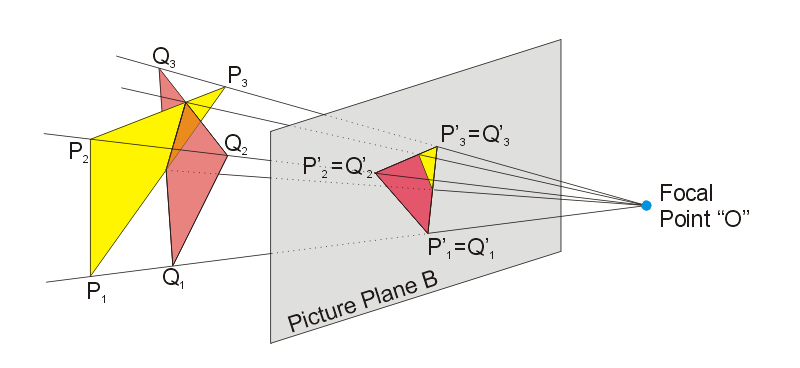
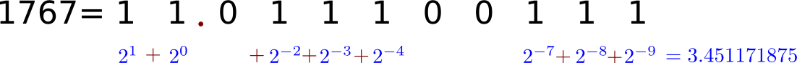

Aprendendo OpenCL
Anderson Gonçalves Marco / anderson.marco@gmail.com
Orientador: Jerônimo C. Pellegrini
Tópicos
- Introdução a programação paralela
- Historia das GPUs
- Preparando o ambiente de desenvolvimento
- Hello Word
- Estrategia de paralelização
- Preparando o ambiente de desenvolvimento para integração com OpenGL
- Integração com OpenGL
- Debug/Profilling
Introdução a programação paralela
Oque é?
Dividir um problema entre muitos programas.
Por que isto aconteceu
A velocidade de comunicação entre os transistores de uma CPU esta atrelada a velcoidade da luz.
Por que isto aconteceu
| Cray X-MP/48 | Sun 2-50 |
| Lançado: 1984 Preço: $15 milhões | Lançado: 1986 Preço: $8.900 |
Tipos
- Memória compartilhada
- Memória distribuida
Memória distribuida
Memória distribuida
Memória compartilhada
Memória compartilhada
A Excessão confirma a regra
O processor do PS3 usava a arquitetura de memória distribuida.
Programando em paralelo sem precisar bibliotecas
Paralelizando a integral da função de Weierstrass entre -0.4 e 0.4.
Função de Weierstrass
$$f(x)=\sum\limits_{n=0}^{\infty} \frac{1}{2^n} cos(3^n \pi x) $$
Código do processo slave
slave.c
codes/ex1CalcularIntegral/slave.c
Código do processo master
master.bash
codes/ex1CalcularIntegral/master.bash
Observação
- Compile slave.c com o comando:
gcc slave.c -o slave -lm - Depois de criar o arquivo master.bash execute o comando:
chmod +x master.bash
Historia das GPUs
Importancia das texturas e luzes em um game
Luzes
<>Linha do tempo
CMAKE
Um gerador de scripts de compilação.
CMAKE
Um script cmake pode gerar:
- Projeto para Visual Studio (Windows).
- Scripts makefile (Linux).
- Projeto para Xcode (Mac OS X).
CMAKE
A unica dependência é um compilador C++. Caso queira habilitar a interface gráfica do Cmake será necessário a biblioteca QT.
CMAKE
Faça seus scripts de compilação uma vez e os debug em todos os lugares.
Scripts de CMAKE
CmakeLists.txt
codes/projectDirectoryExample/CMakeLists.txt
Scripts de CMAKE
CMakePostBuildCommands.cmake
codes/projectDirectoryExample/CMakePostBuildCommands.cmake
Preparando ambiente
Colocar ambos os scripts CMAKE na pasta raiz do projeto.
Scripts para limpar o projeto (opcional)
- clean.py
- clean.bat
Scripts para limpar o projeto
clean.py
codes/projectDirectoryExample/clean.py
Scripts para limpar o projeto
clean.bat
codes/projectDirectoryExample/clean.bat
Scripts para limpar o projeto
Coloque os scripts clean.bat e clean.py na pasta raiz do projeto.
Diretorio src
Crie o diretorio src. Nele ficaram os códigos fonte além de outros arquivos de recursos.
Diretorio src/openclCodes
Os arquivos com códigos para serem executados na gpu ficaram no diretório openclCodes que é um subdiretorio de src.
Crie o diretorio src/whereami
Crie o diretorio whereami dentro do diretório src. Cole neste diretorio os arquivos whereami.c e whereami.h.
O whereami é uma bibloteca, distruida no formato codigo fonte, que permite um programa em C saber em que diretorio esta o executavel. Esta bibloteca é muito útil para programa acessar arquivos que contem informações para sua execução, como arquivos *.cl.
Whereami
whereami.h
codes/projectDirectoryExample/src/whereami/whereami.h
Whereami
whereami.c
codes/projectDirectoryExample/src/whereami/whereami.c
Códigos auxiliares
KernelData.h, KernelData.c, errors.h, errors.c, commonOpenclfunctions.c, commonOpenclfunctions.h, commonFunctions.c e commonFunctions.h ajudam na hora de se trabalhar com opencl.
KernelData
KernelData.h
codes/projectDirectoryExample/src/KernelData.h
KernelData
KernelData.c
codes/projectDirectoryExample/src/KernelData.c
errors
errors.h
codes/projectDirectoryExample/src/errors.h
errors
errors.c
codes/projectDirectoryExample/src/errors.c
commonOpenclfunctions
commonOpenclfunctions.h
codes/projectDirectoryExample/src/commonOpenclfunctions.h
commonOpenclfunctions
commonOpenclfunctions.c
codes/projectDirectoryExample/src/commonOpenclfunctions.c
commonFunctions
commonFunctions.h
codes/projectDirectoryExample/src/commonFunctions.h
commonFunctions
commonFunctions.c
codes/projectDirectoryExample/src/commonFunctions.c
Ambiente pronto
Hello word
main
Coloque o arquivo main.c no diretorio src do seu projeto
main
main.c
codes/helloWord/src/main.c
Kernel opencl
Coloque o arquivo add.cl no diretorio src/openclCodes do seu projeto
Kernel opencl
add.cl
codes/helloWord/src/openclCodes/add.cl
Compilando
No Linux use o comando cmake ., no diretório do projeto, para gerar o makefile. Depois use o comando make para compilar. O diretorio build será gerado no diretório do projeto possuindo um arquivo executavel com mesmo nome do diretorio do projeto, este é o executavel gerado a partir do main.c.
Compilando
No Windows ou no Mac OS X você deve abrir a interface gráfica do CMAKE e gerar um projeto Visual Studio/Xcode.
Arquitetura da GPU
Estratégias de paralelização
Paralelizando for's
O código a seguir soma dois vetores de qualquer tamanho usando uma quantidade fixa de processos.
Soma de vetores
main.c
codes/helloWordV2/src/main.c
Soma de vetores
add.cl
codes/helloWordV2/src/openclCodes/add.cl
Structs e funções
Vamos pegar um vetor de números complexos V e criar um kernel opencl que retorno V^2.
Structs e funções
main.c
codes/structsAndFunctions/src/main.c
Structs e funções
complexSquared.cl
codes/structsAndFunctions/src/openclCodes/complexSquared.cl
Usando shared memory
Ela é mais rápida que a memória de textura. Útil para paralelizae grupos de processos.
Exemplo de multiplicação de matrizes ilustrando o uso da shared memory
Multiplicação de matrizes
main.c
codes/matrixMulSharedMemory/src/main.c
Multiplicação de matrizes
matmul.cl
codes/matrixMulSharedMemory/src/openclCodes/matmul.cl
Barrier
Sincroniza apenas processos dentro de um grupo local.
CLK_GLOBAL_MEM_FENCE usado quando o processos que queremos sincronizar lêem/escrevem na memória global.
CLK_LOCAL_MEM_FENCE usado quando o processos que queremos sincronizar lêem/escrevem na shared memory.
Trabalhando com ponteiros dentro do kernel
Ponteiros do kernel tem qualificadores de acesso.
Fique atento com o qualificador quando você faz atribuição de endereços de memória entre ponteiros.
Trabalhando com ponteiros dentro do kernel
Jeito errado para atribuição de endereços de memoria entre ponteiros.
codes/ponteirosOpencl/jeitoErrado1.cl
Trabalhando com ponteiros dentro do kernel
Jeito certo para atribuição de endereços de memoria entre ponteiros.
codes/ponteirosOpencl/jeitoCerto1.cl
Trabalhando com ponteiros dentro do kernel
Jeito errado para atribuição de endereços de memoria entre ponteiros.
codes/ponteirosOpencl/jeitoErrado2.cl
Trabalhando com ponteiros dentro do kernel
Jeito certo para atribuição de endereços de memoria entre ponteiros.
codes/ponteirosOpencl/jeitoCerto2.cl
Preparando o ambiente de desenvolvimento para integração com OpenGL.
Mudar para C++
Para simplificar algumas coisas, vamos utilizar uma biblioteca C++ chamada GLM.
O GLM são um conjuntos de rotinas, em arquivos *.hpp, que facilitam na hora de se trabalhar com transformações geométricas.
O OpenGL já não implementa isto?
Na forma com que vamos usar o OpenGL ele não implementa nada.
Nos vamos usar o OpenGL do desktop como se fosse o OpenGL do celular (OpenGL ES), o motivo disto e que queremos ter um controle maior sobre a GPU.
Diagrama de uma projeção

Como o OpenGL manipula a camera
Adicionar diretivas de compilação
É preciso colocar a diretiva de compilação extern "C" { } em todos os arquivos *.h do diretório src.
Modificar ambiente do projeto
Arquivos que terão grandes modificações
- KernelData.h e KernelData.c : adicionada uma nova função, os ponteiros this foram renomeados para self
- errors.h : adicionado um novo código de erro
- CMAKELists.txt e CMakePostBuildCommands.cmake : adicionado diretivas para compilar com OpenGL
Manipular shaders
Adicionado os arquivos e pastas:
- shader_utils.c e shader_utils.h: Contem rotinas para manipular shaders.
- shaders: diretório com os fontes dos shaders.
Compilação no windows
Adicionado os arquivos e pastas:
- artefacts : Contem dlls e bibliotecas C++, útil apenas para rodar os códigos no Windows.
Rotinas para trabalhar com imagens
Adicionado os arquivos functionsForPPMImages.c e functionsForPPMImages.h. Estes arquivos contêm uma função para abrir uma imagem em formato PPM.
Ambiente pronto
Integração com OpenGL
Main
main.cpp
codes/openclIntegration/src/main.cpp
functionsForPPMImages
functionsForPPMImages.h
codes/openclIntegration/src/functionsForPPMImages.h
functionsForPPMImages
functionsForPPMImages.c
codes/openclIntegration/src/functionsForPPMImages.c
vertex shader
shaders/cube.v.glsl
codes/openclIntegration/src/shaders/cube.v.glsl
fragment shader
shaders/cube.f.glsl
codes/openclIntegration/src/shaders/cube.f.glsl
shader_utils
shader_utils.h
codes/openclIntegration/src/shader_utils.h
shader_utils
shader_utils.c
codes/openclIntegration/src/shader_utils.c
Oque mudou em CMAKELists.txt
Oque mudou em CMakePostBuildCommands.cmake
Oque mudou em KernelData.h
Oque mudou em KernelData.c
Ponto fixo
Oque é
Tecnica para representar números reais em inteiros.

Operações
, mas
Operações
fixedPoint.cl
codes/fixedPoint/src/openclCodes/fixedPoint.cl
Implementando as funções matemáticas comuns
Para isto vamos utilizar o algoritmo CORDIC.
Planilha Libre Calc com o CORDIC implementado clique aqui.
Algoritmo para logaritmo
\( \ln a=b \Longleftrightarrow e^{b}=a\)
Com uma tabela de \( e^{x} \) procure os \( e^{i} \) onde \( \sum e^{i} \approx a \)
Algoritmo para exponenciação
Lembre-se que \( e^{b}+e^{c} = e^{b+c}\)
Com uma tabela de \( e^{x} \) procure os \( e^{i} \) onde \( \sum i \approx x \)
Algoritmo para raiz quadrada
Encontre um \(t\) tal que \((xt)^2=x\).
Para valores muito pequenos de deve-se evitar underflow. Para isto lembre-se da propriedade \( \frac{\sqrt{xy}}{\sqrt{y}}=\sqrt{x} \)
OBS: Este Algoritmo não precisa de tabela.
Algoritmo para seno e cosseno
Uma rotação pode ser divida em uma soma de rotações.
Sen(x) significa o valor do seno para o angulo x.
A partir de uma tabela de senos e cossenos faça rotações no vetor \( \vec{v} \) até chegar no angulo desejado. O valor inicial para \( \vec{v} \) é \([0,1] \), o valor final de \( v_1 \) corresponde ao seno e o valor final de \( v_2 \) é o cosseno.